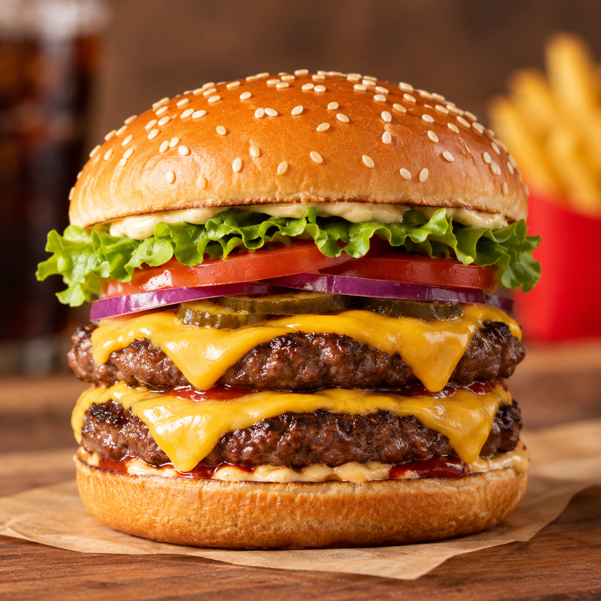

This recipe is for a classic double cheeseburger.
It’s made with a sesame burger bun, two beef patties, two slices of cheese, lettuce, tomato, onion, pickles, and burger sauce.
The preparation is simple: cook the beef patties in a pan, melt a slice of cheese on each patty, and lightly toast the burger bun. Then assemble everything with the sauce, beef patties, cheese, and vegetables.
The combination of juicy beef, melted cheese, fresh vegetables, and tangy pickles makes this burger rich and flavorful without being too heavy.
For a more classic fast-food-style burger, use thin beef patties and American cheese.
Mix the mayonnaise, ketchup, and mustard in a small bowl.
Season both sides of the beef patties with salt and black pepper.
Heat a skillet over medium-high heat and add a little oil. Cook the patties for about 2–3 minutes on each side.
Place one slice of cheddar cheese on each patty. Cover the skillet for about 30 seconds until the cheese melts.
Cut the burger bun in half and lightly toast the cut sides in the skillet.
Spread the sauce on the bottom bun. Add the first cheeseburger patty, followed by the second patty. Add pickles and onions, then place the top bun on the burger.
Serve immediately with fries or your favorite side dish.
For a classic fast-food-style double cheeseburger, use thin beef patties and American cheese. The thinner patties cook quickly and give you a better beef-to-cheese ratio.